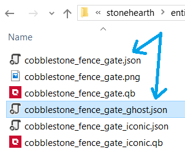
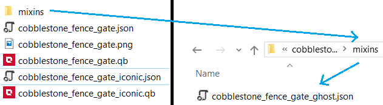
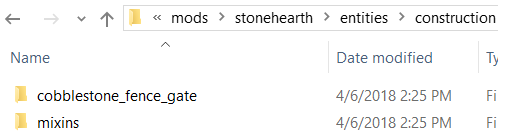

We have encountered mixins in previous sections of the guide. They are not to be confused with "mixintos".
Mixins
A mixin allows an entity definition to pull in content from the mixin file. Using mixins you can define common data parameters and re-use them across multiple entity definitions.
Here's a massively abbreviated version of the Stonehearth mod's manifest file.
{
"info" : {
"name" : "Stonehearth"
},
"aliases" : {
"medium_oak_tree" : "file(entities/trees/oak_tree/medium_oak_tree)",
"mixins:tree" : "file(mixins/tree)"
}
}
Here's what entities/trees/oak_tree/medium_oak_tree/medium_oak_tree.json looks like (at the time this guide was written):
{
"mixins": "stonehearth:mixins:tree",
"type": "entity",
"components": {
"model_variants": {
"default": {
"models": [
{
"type": "one_of",
"items": [
"file(medium_oak_tree.qb)",
"file(medium_oak_tree_2.qb)",
"file(medium_oak_tree_3.qb)"
]
}
]
}
},
"stonehearth:resource_node": {
"resource": "stonehearth:resources:wood:oak_log",
"durability": 9
},
"mob": {
"model_origin": { "x": -0.5, "y": 0, "z": 0.5 },
"region_origin": { "x": 0.5, "y": 0, "z": 0.5 },
"align_to_grid": [
"x",
"z"
]
},
"destination": {
"region": [
{
"min": { "x": -2, "y": 0, "z": -2 },
"max": { "x": 3, "y": 1, "z": 3 }
}
]
},
"region_collision_shape": {
"region": [
{
"min": { "x": -2, "y": 0, "z": -2 },
"max": { "x": 3, "y": 16, "z": 3 }
}
]
}
},
"entity_data": {
"stonehearth:evolve_data": {
"next_stage": "stonehearth:trees:oak:large",
"evolve_time": "5d"
},
"stonehearth:catalog": {
"display_name": "i18n(stonehearth:entities.trees.oak_tree.medium_oak_tree.display_name)",
"description": "i18n(stonehearth:entities.trees.oak_tree.medium_oak_tree.description)",
"subject_override": "stonehearth:trees:oak:large"
}
}
}
Now notice the "mixins" line at the top of the file. We refer to the mixin by the alias specified in the manifest, preceded by the name of the mod that declares it plus a colon.
Here's the definition of the tree mixin: mixins/tree/tree.json
{
"type": "mixin",
"mixins": "stonehearth:mixins:placed_object",
"components": {
"render_info": {
"scale": 1
},
"stonehearth:resource_node": {
"harvest_overlay_effect": "stonehearth:effects:chop_overlay_effect",
"harvester_effect": "chop",
"description": "chop_tree"
}
},
"entity_data": {
"stonehearth:catalog": {
"category": "plants"
},
"stonehearth:render_materials": {
"hud": "materials/ghost_item.json"
},
"stonehearth:on_destroy": {
"effect": "stonehearth:effects:terrain:tree_harvest"
}
}
}
Notice that the type is "mixin". And surprise! It also pulls other mixins in its definition ("stonehearth:mixins:placed_object"). It is a convenient way to reuse data and code. You don't need to have a "mixins" node in all your files, only in the ones that benefit from it. You can use either paths or aliases for them, and the files you reference in the "mixins" node don't have to be of type "mixin". They can be of any type.
You can specify more than one mixin by using an array, for example, this is the definition of cobblestone_fence_gate.json:
{
"type": "entity",
"mixins": [
"file(cobblestone_fence_gate_ghost.json)",
"stonehearth:mixins:portals:double_gate",
"stonehearth:mixins:basic_destructable_door"
],
"components": {
"stonehearth:entity_forms": {
"iconic_form": "file(cobblestone_fence_gate_iconic.json)",
"ghost_form": "file(cobblestone_fence_gate_ghost.json)",
"placeable_on_ground": true
}
},
"entity_data": {
"stonehearth:net_worth": {
"value_in_gold": 6,
"rarity": "common",
"shop_info": {
"buyable": true,
"sellable": true,
"shopkeeper_level": 1,
"shopkeeper_type": "caravan"
}
},
"stonehearth:territory": {
"marks_territory": true
}
}
}
Notice the brackets of the array for the "mixins" node. The first mixin is specified as a path, and the other ones as aliases.
About relative paths
Observe the mixin "file(cobblestone_fence_gate_ghost.json)" of the example above. Since the cobblestone_fence_gate_ghost.json file is inside the same folder than cobblestone_fence_gate.json (which references it), "file()" will search for cobblestone_fence_gate_ghost.json inside this same folder: 
If it had been inside another folder, we would use "file(other_folder/cobblestone_fence_gate_ghost.json)". For example, if we had it like in this picture, we'd say "file(mixins/cobblestone_fence_gate_ghost.json)": 
If it had been outside of the folder where cobblestone_fence_gate.json is, we would have used "file(../cobblestone_fence_gate_ghost.json)":

And if it had been on a folder outside, we would have used "file(../other_folder/cobblestone_fence_gate_ghost.json)". In the case of this picture it would be "file(../mixins/cobblestone_fence_gate_ghost.json)": 
As you can see, for every directory that we go up from the folder inside which is the file that contains references to the paths, we append one ../ at the beginning of the path.
About absolute paths
An alternative to using "file()" when we don't have an alias for a certain asset would be using an "absolute" path, which would start from the namespace of the mod, and will travel the sub-directories starting from where the manifest is. Like so: "/stonehearth/entities/construction/cobblestone_fence_gate/cobblestone_fence_gate_ghost.json"